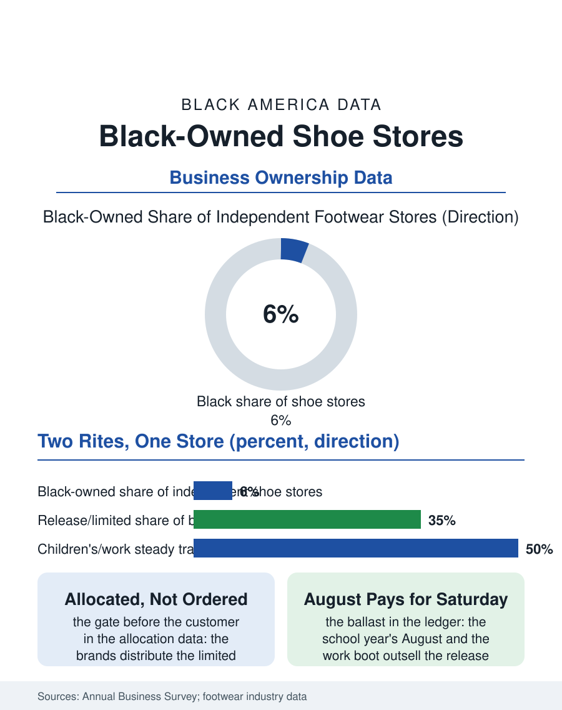

Black Business
Measured for the Year: Black-Owned Shoe Stores
The fitting stool and the release line, the allocation's politics and August's ballast, in the store that measured the neighborhood's children. The shoe file.

The shoe store was the fitting room of the respectable century, the independent footwear retailer measuring the community's children for the school year and the Easter outfit, and its Black-owned remnant now competes in the sneaker economy's glare, where the independent's allocation of the limited release is the industry's gatekeeping in miniature. The business census counts the footwear stores in the thousands, the independents falling. This article reads the shoe store file.
The Fitting's Decline
The classic model's foundation was the fit and the credit: the proprietor who measured the child's foot and carried the family's account was selling the service the self-service rack abolished, and the industry's formats, the chain's volume and the department store's shoe floor and finally the platform's warehouse, successively stripped the independent of its price ground until the sneaker era rebuilt a portion of it on the opposite principle, the shoe as the collectible whose release is an event, whose store is a venue, and whose customer camps for the privilege of the purchase. The allocation file is the independent's modern gate: the brands distribute the limited product by the account's volume and standing, a ladder whose rungs the new and the community store climb against the chains' incumbency, so that the Black-owned sneaker boutique's founding problem is inventory's politics before it is the customer's, its opening assortment deciding its relevance in the culture's fastest retail conversation. The orthopedic and diabetic shoe's quiet department deserves the file's note as the independent's most defensible niche, the fitting's expertise and the insurance's paperwork being a service the platform's warehouse cannot perform at the kitchen table of the elder whose feet the diabetes file counts, and the stores that built the department hold the Medicare supplier's accreditation as their moat's modern form.
The Sneaker Economy's Local Room
The boutique's model is the culture's own retail: the release calendar as the store's programming, the raffle and the line as its theater, the staff's fluency the product's authentication, and the store as the local node of a global resale market whose prices are set on the platforms above it, the independent capturing the retail margin on the pairs its allocation secured while the grails trade over its head. The athletic chains' retrenchment from the urban corridors in the industry's cycles has opened and closed the local room's opportunity in the pattern of the other retail files, the mall's decline returning the shoe purchase to the street where the independent stands. The children's and the work shoe's steady trade beneath the sneaker's weather is the file's ballast, the school year's August and the warehouse worker's boot being the volume the release calendar's drama obscures in the store's actual ledger.
Measured for the Year
The shoe store file closes on the fitting stool's memory, because the store's civic meaning in the community's account was the rite: the new shoes for the school year, measured on the metal gauge by the proprietor who had measured the parent's feet in the same chair, a continuity the formats abolished and the boutique's event economy replaces with a different rite for a different shoe. The survivors negotiate both, the release's Saturday line and the August family's weekday trust, in the hybrid the corridor's economics now require. The census counts the footwear stores in the retail totals, the independents' decline the category's trend and the boutiques' formation its counter-current within the same count. The file's last entry is the gauge's cold metal on the child's sock in the surviving store's August, the size called out and the box brought down by the proprietor whose grandfather stocked the same shelf, the sneaker's century having changed the shoe on the shelf above every recognition except the one that matters to the file: the name over the door, in the neighborhood, still fitting its own. The repair bench at the back, the cobbler's descendant skill kept in the surviving stores, adds the service the platform cannot ship, the resole and the heel and the stretched width performed while the customer waits, and its bench is often the oldest continuous workstation on the corridor, older than the store's own name in the cases where the repair shop became the store around it.
More in Black Business
Black-Owned Businesses: Counts, Receipts, and the Representation Gap
About 161,000 Black-owned employer firms and three million solo ventures: how the Census Bureau counts Black business ownership, where firms concentrate, and the gap between population share and business share.
Black Median Net Worth: The Wealth Gap in Federal Reserve Data
The Federal Reserve puts Black median family net worth at $44,900, against $285,000 for White families — about 16 cents on the dollar. The widest gap in economic data.
Black Buying Power: The $1.8 Trillion Consumer Economy
Black buying power is estimated at about $1.8 trillion — larger than the economy of most nations. What the figure measures, who produces it, and what it buys.
Source: U.S. Census Bureau, Annual Business Survey for shoe stores; Footwear Distributors and Retailers of America data.